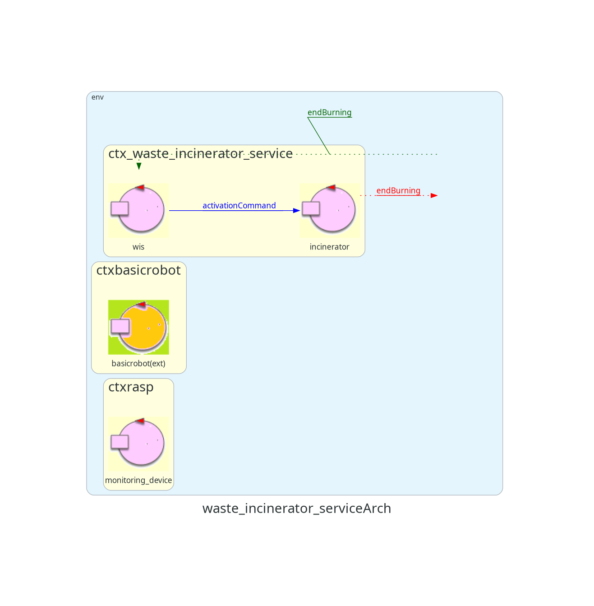
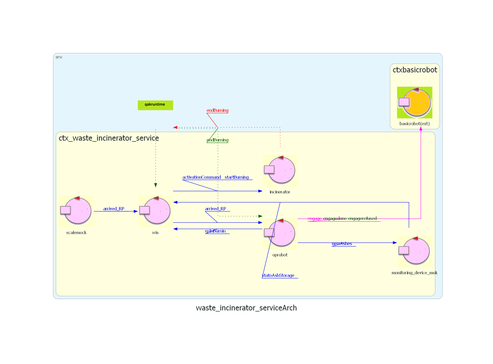

Introduzione
Un'azienda intende realizzare un WasteIncineratorService per trattare i rifiuti bruciandoli e necessita di un servizio di sistema software
(WIS) che controlli un robot (chiamato OpRobot) per spostare i rifiuti.
Requisiti
Il seguente link porta al documento dei requisiti fornito dal cliente.
Documento requisiti
Sprint precedente
Il seguente link porta al documento dello SPRINT precedente nel quale si è effettuata l'analisi dei requisiti.
SPRINT 0
Architettura iniziale di riferimento
Di seguito viene mostrata un'immagine che rappresenta l'architettura finale dello sprint precedente, che sarà quindi l'architettura iniziale di questo sprint.

GOAL
In questo SPRINT verranno affrontati i seguenti requisiti:
- Interazione WIS - OpRobot
- Interazione WIS/OpRobot - Incinerator
Si rimandano quindi a SPRINT futuri l'interazione del WIS con il Sonar del MonitoringDevice e con la Scale del WasteStorage.
Analisi del problema
Interazione WIS - OpRobot
Le principali problematiche dell'interazione WIS - OpRobot sono le seguenti:
- P1 Come modelliamo l'entità OpRobot? Come un attore a sè stante o come un POJO all'interno del WIS?
- P2 OpRobot conosce lo stato della stanza e quindi autonomamente si muove al suo interno, o necessita di comandi da parte del WIS?
Nota: con stato della stanza si intende lo stato dell'Incinerator (se sta bruciando oppure no), del WasteStorage (presenza o meno di RP) e del AshStorage (se il contenitore è pieno oppure no).
Concentrandoci su P1, una prima soluzione è quella di definire l'OpRobot come un attore.
Il vantaggio di tale soluzione è che possiamo "alleggerire" i compiti del WIS, in quanto si può demandare al OpRobot l'impartizione dei comandi di movimento al BasicRobot.
Invece, se scegliessimo di modellarlo come un POJO all'interno del WIS, avremmo come vantaggio di non dover gestire un attore in più
(e quindi i possibili messaggi che può ricevere), ma "pagando" il prezzo di un WIS più "pesante" che si deve occupare anche dell'interazione con il BasicRobot.
Per P2, una prima soluzione è quella di iniettare lo stato della stanza all'interno del OpRobot.
Il vantaggio di tale soluzione è di avere OpRobot autonomo nei movimenti, in quanto ad ogni istante sa come comportarsi.
Invece, se scegliessimo di mantenere lo stato della stanza all'interno del WIS, avremmo un WIS "orchestratore" che ad ogni istante si occupa di impartire determinati comandi al OpRobot.
Come soluzione per P1,
si ritiene più opportuno modellare OpRobot come un Attore per avere il principale vantaggio della gestione dei comandi per il BasicRobot da parte del OpRobot.
Come soluzione per P2,
si ritiene più oppurtuno mantenere la conoscenza dello stato della stanza nel WIS, per dare a ciascun componente soltanto le responsabilità necessarie.
Infatti, logicamente OpRobot ha soltanto il compito di impartire i comandi di movimento effettivi al BasicRobot, mentre è compito del WIS monitorare lo stato della stanza
e guidare OpRobot a fare le azioni opportune.
Interazione WIS/OpRobot - Incinerator
Le principali problematiche dell'interazione WIS/OpRobot - Incinerator sono le seguenti:
- P3 Come modellare il fatto che il robot depositi un RP nell'Incinerator e quindi quest'ultimo inizi la fase di burning?
- P4 Come far raggiungere al OpRobot i vari punti della stanza, in particolare quelli di interesse come l'Incinerator?
Incominciamo analizzando il problema P3.
Dai requisiti viene specificato che l'Incinerator inizia a bruciare appena OpRobot deposita un RP nella porta di BURNIN.
A livello software è necessario modellare tale evento, quindi
si ritiene oppurtuno introdurre un nuovo messaggio startBurning che faccia transitare l'attore Incinerator nel nuovo stato di burning di un RP.
Tale messaggio è identificabile come un
Dispatch in quanto non necessitiamo di una reply, ma l'effettiva informazione che sta bruciando ci viene data dal MonitoringDevice.
Prendendo in considerazione il problema P4, si deve trovare un modo per "mappare" la stanza, e quindi dotare il WIS di un
piano di movimento per OpRobot
in modo che partendo da un punto di partenza (ad esempio, la HOME) possa raggiungere un punto di arrivo (ad esempio, la porta di WasteIn).
Per fortuna, la nostra software house è dotata di un
MapBuilder e di un
Planner
che ci permettono di costruire una mappa della stanza e un piano di movimento per raggiungere un punto B partendo da un punto A.
Architettura logica del problema
Definiamo ora un modello che descrive come i componenti elencati in precedenza interagiscono tra loro.

Discussione sulle entità
L'attore monitoring_device_mok viene introdotto per simulare il comportamento del vero MonitoringDevice, senza però preoccuparci della sua effettiva realizzazione. (che verrà affrontata in SPRINT successivi)
In questo modello ha il solo compito di notificare al WIS il livello della cenere nel AshStorage.
In particolare, è il WIS che fa da "Observer" al monitoring_device_mok per ricevere aggiornamenti sullo stato del container.
Per simulare i dati sugli RP riportati dalla Scale, introduciamo un attore scale_mok che ha il compito di notificare tale dato al WIS.
Come per il monitoring_device_mok, questo ci permette di ragionare sull'interazione tra i componenti senza doverli progettare sin da subito nel dettaglio.
Progetto
Piano di test
Deployment
Per poter provare questo primo prototipo del sistema, occorre eseguire i seguenti componenti nel seguente ordine:
- Ambiente di simulazione VirtualRobot: posizionarsi nella cartella "it.unibo.virtualRobot2023", aprire un terminale e lanciare il comando docker compose -f .\virtualRobot23.yaml up;
- BasicRobot: posizionarsi nella cartella "unibo.basicrobot24", aprire un terminale e lanciare il comando gradlew run;
- WasteIncineratorService: posizionarsi nella cartella "sprint1", aprire un terminale e lanciare il comando gradlew run;
Il risultato sarà la visualizzazione del robot virtuale che si muove nella stanza, seguendo la logica definita nei requisiti.
Sprint futuri
Nel prossimo sprint si prevede di sostituire il mok con il vero e proprio MonitoringDevice, andando quindi ad introdurre il Sonar e il Led del RaspberryPi.
{kind=link}
{kind=link}